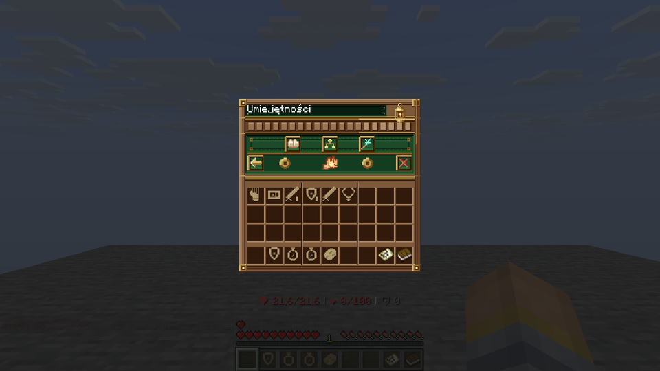
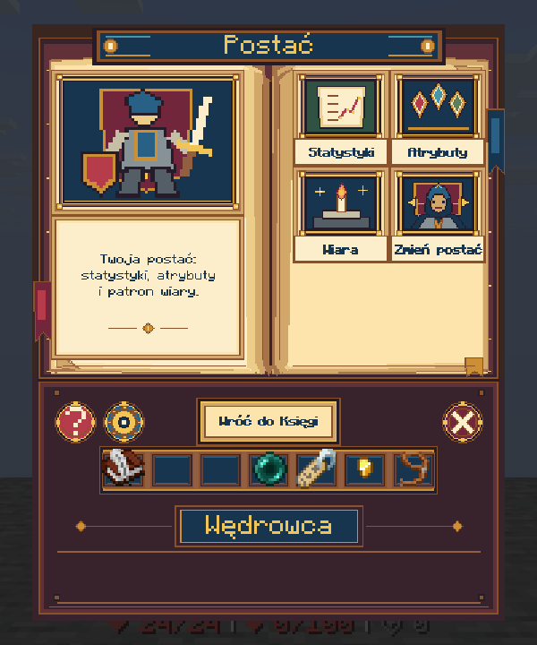
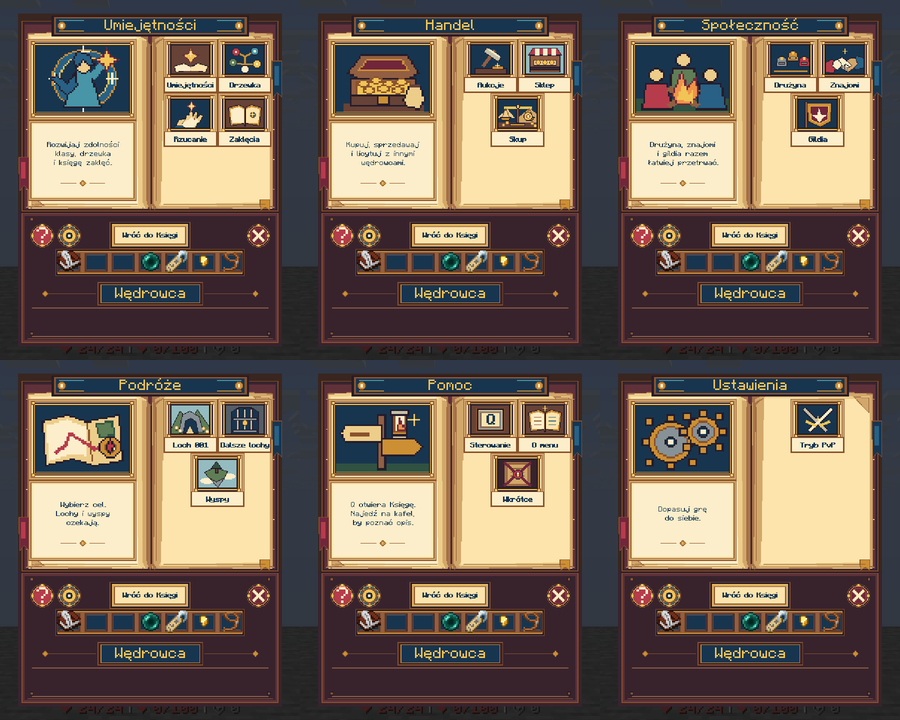
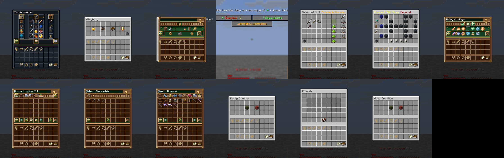
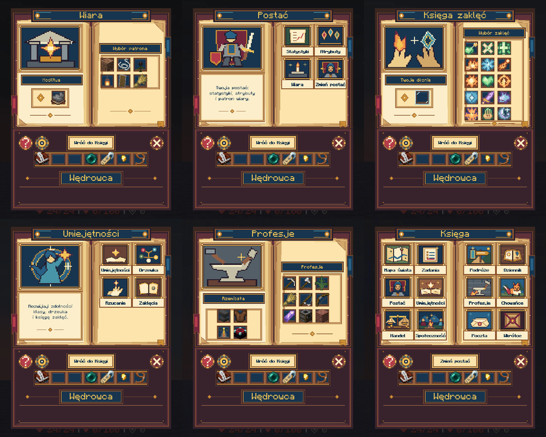
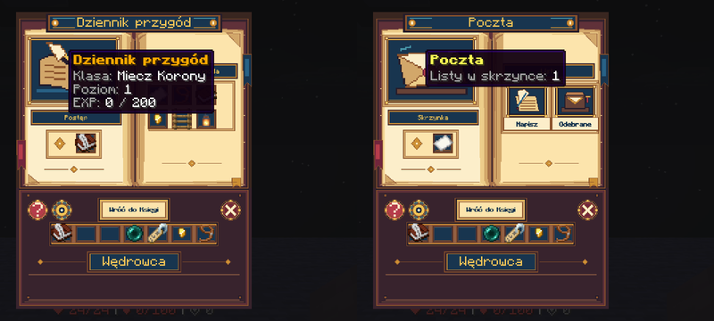
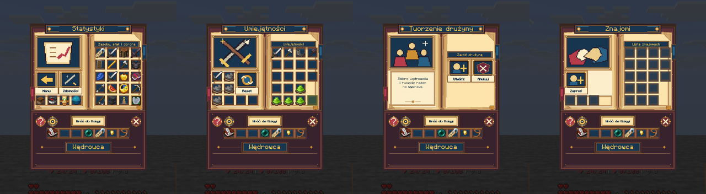
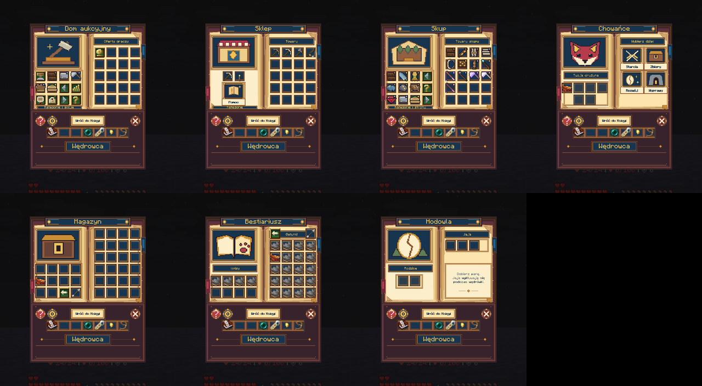
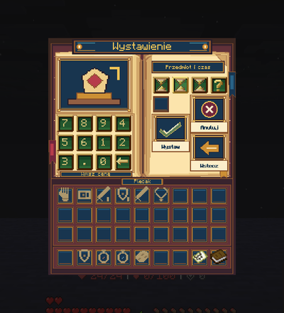
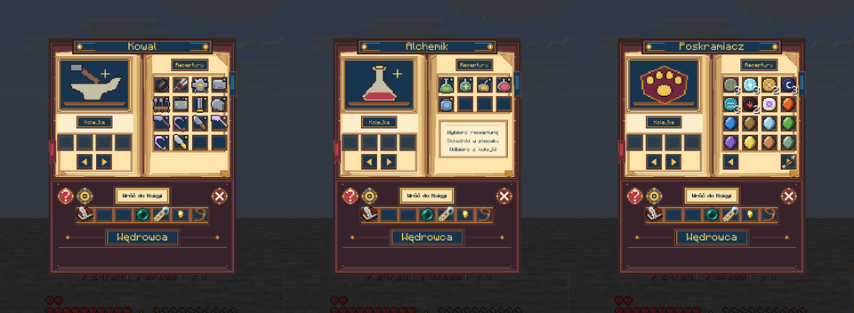

<title>Księga: reszta menu</title>
<style>
/* Układ: jedna kolumna przeglądu, sekcje = grupy okien, zrzuty z klienta w skali pikselowej */
:root {
  --bg: #f3ead8; --paper: #fbf5e8; --ink: #2a1f2b; --muted: #6b5a52; --line: #d8c6a4;
  --accent: #8c532c; --navy: #183650; --ok: #2f6b45; --warn: #9a5b12;
  --display: "Pixelify Sans", "Courier New", monospace; --body: "Literata", Georgia, serif; --mono: "JetBrains Mono", ui-monospace, monospace;
}
@media (prefers-color-scheme: dark) { :root:not([data-theme="light"]) {
  --bg: #1d1719; --paper: #282023; --ink: #f1e6d2; --muted: #b9a68f; --line: #4a3a33;
  --accent: #e0a35c; --navy: #9cc3dd; --ok: #7fc79a; --warn: #e5b061; color-scheme: dark } }
:root[data-theme="dark"] {
  --bg: #1d1719; --paper: #282023; --ink: #f1e6d2; --muted: #b9a68f; --line: #4a3a33;
  --accent: #e0a35c; --navy: #9cc3dd; --ok: #7fc79a; --warn: #e5b061; color-scheme: dark }
body { background: var(--bg); color: var(--ink); font: 16px/1.6 var(--body); padding-inline: 16px; padding-block: 32px 64px; }
main { max-width: 980px; margin: 0 auto; display: grid; gap: 40px; }
h1, h2 { font-family: var(--display); font-weight: 600; text-wrap: balance; color: var(--navy); margin: 0; }
h1 { font-size: clamp(30px, 6vw, 46px); line-height: 1.1; }
h2 { font-size: 24px; }
p { margin: 0; max-width: 68ch; }
.lead { color: var(--muted); font-size: 17px; }
section { display: grid; gap: 14px; }
.shot { background: var(--paper); border: 1px solid var(--line); padding: 10px; overflow-x: auto; }
.shot img { display: block; image-rendering: pixelated; max-width: 100%; height: auto; }
.cap { font-size: 14px; color: var(--muted); }
.cols { display: grid; grid-template-columns: repeat(auto-fit, minmax(280px, 1fr)); gap: 16px; }
.cols > * { min-width: 0; }
ul { margin: 0; padding-left: 20px; display: grid; gap: 6px; max-width: 72ch; }
table { border-collapse: collapse; width: 100%; font-size: 15px; font-variant-numeric: tabular-nums; }
th, td { text-align: left; padding: 7px 10px; border-bottom: 1px solid var(--line); vertical-align: top; }
th { font-family: var(--mono); font-size: 12px; letter-spacing: .06em; text-transform: uppercase; color: var(--muted); }
.tag { font-family: var(--mono); font-size: 12px; padding: 1px 7px; border: 1px solid currentColor; white-space: nowrap; }
.ok { color: var(--ok); } .warn { color: var(--warn); }
code { font-family: var(--mono); font-size: 13.5px; background: var(--paper); padding: 1px 5px; border: 1px solid var(--line); word-break: break-word; }
.tbl { overflow-x: auto; }
</style>
<link rel="stylesheet" href="https://fonts.googleapis.com/css2?family=Pixelify+Sans:wght@500;600&family=Literata:opsz,wght@7..72,400;7..72,600&family=JetBrains+Mono&display=swap">
<main>
  <header style="display:grid;gap:12px">
    <h1>Księga: reszta menu</h1>
    <p class="lead">Wszystkie okna, do których gracz dochodzi z menu Q, przerysowane jako strony tej samej Księgi. Robiły to instancje Codexa, każdy etap obejrzany w prawdziwym kliencie na klonie world1, kontem bez OP i z OP. Na produkcję jeszcze nie poszło.</p>
  </header>

  <section>
    <h2>Stan</h2>
    <div class="tbl"><table>
      <tr><th>Grupa</th><th>Okna</th><th>Test w kliencie</th></tr>
      <tr><td>Podstrony hubów</td><td>Postać, Umiejętności, Handel, Społeczność, Ustawienia, Pomoc, Podróże</td><td><span class="tag ok">13/13 kafli działa</span></td></tr>
      <tr><td>Okna treści</td><td>Wiara, Księga zaklęć, Profesje</td><td><span class="tag ok">powrót do rodzica</span></td></tr>
      <tr><td>Nowe funkcje</td><td>Dziennik przygód, Poczta (wysyłka listu bez czatu)</td><td><span class="tag ok">list wysłany i odczytany</span></td></tr>
      <tr><td>MMOCore</td><td>Statystyki, Atrybuty, Umiejętności, Zadania, Drużyna ×2, Znajomi ×2, Gildia ×2</td><td><span class="tag ok">drużyna założona z kafla</span></td></tr>
      <tr><td>Handel (CoreTools)</td><td>Sklep, Skup, ilości, Dom aukcyjny, Moje oferty, Kupno, Wystawienie</td><td><span class="tag ok">Wystawienie z plecakiem</span></td></tr>
      <tr><td>Chowańce</td><td>Menażeria, Hodowla, Lochy, Ranking, Magazyn, Bestiariusz</td><td><span class="tag ok">otwierają się</span></td></tr>
      <tr><td>Warsztaty MMOItems</td><td>13 profesji + Poskramiacz</td><td><span class="tag ok">receptury i kolejka</span></td></tr>
    </table></div>
    <p class="cap">Pominięte celowo: drzewka umiejętności MMOCore (siatka połączonych węzłów, wycięcie grzbietu przecina ścieżki), panel podatków aukcji (tylko OP), okna z kodu Chowańców (walka, info), mapa świata (ma własny styl).</p>
  </section>

  <section>
    <h2>Przed i po</h2>
    <div class="cols">
      <figure class="shot" style="margin:0"><figcaption class="cap">Przed: podmenu Umiejętności, stary panel i widoczny ekwipunek.</figcaption></figure>
      <figure class="shot" style="margin:0"><figcaption class="cap">Po: strona Postać w grze. Najechanie na ilustrację pokazuje klasę, poziom i EXP na żywo.</figcaption></figure>
    </div>
  </section>

  <section>
    <h2>Podstrony hubów</h2>
    <div class="shot"></div>
    <p class="cap">Umiejętności, Handel, Społeczność, Podróże, Pomoc, Ustawienia. Plakietka „Wróć do Księgi” wraca do Q bez mignięcia ekwipunku.</p>
    <div class="shot"></div>
    <p class="cap">Test kafli przed przeróbką okien docelowych: każdy kafel otworzył właściwe okno. Te okna dostały potem nowy wygląd (niżej).</p>
  </section>

  <section>
    <h2>Okna treści, Dziennik i Poczta</h2>
    <div class="shot"></div>
    <p class="cap">Wiara wraca do Postaci, Księga zaklęć do Umiejętności, Profesje do Księgi.</p>
    <div class="shot"></div>
    <p class="cap">Dziennik pokazuje tylko dane, które już istnieją na serwerze (postać, zadanie, chowaniec, bestiariusz, odznaki, wieża, wiara). Poczta: „Napisz” otwiera okno z polem na odbiorcę, potem na treść; list idzie podpisany nickiem nadawcy. „Odebrane” wypisuje listy na czacie.</p>
  </section>

  <section>
    <h2>MMOCore, handel, Chowańce, warsztaty</h2>
    <div class="shot"></div>
    <div class="shot"></div>
    <div class="cols">
      <figure class="shot" style="margin:0"><figcaption class="cap">Wystawienie na aukcję potrzebuje ekwipunku, więc tu go nie ukrywamy: prawdziwy plecak leży w narysowanych gniazdach.</figcaption></figure>
      <figure class="shot" style="margin:0"><figcaption class="cap">Warsztaty: kolejka po lewej, receptury po prawej, każda profesja z własnym emblematem.</figcaption></figure>
    </div>
  </section>

  <section>
    <h2>Co wyłapałem przy nadzorze</h2>
    <ul>
      <li>Tekst w tytule okna (np. „Wybrana umiejętność: …”, „Sklep · Narzędzia”) rysował się na banerze. Tytuły mają teraz same glify, dane przeszły do dymków.</li>
      <li>Ikony przedmiotów MMOCore i CoreTools przykrywały narysowane kafle. Kafle dostały przezroczysty model.</li>
      <li>Pojedyncze gniazda rozrzucone po stronach, zdublowany przycisk powrotu, emblematy kopiujące miniatury: trzy rundy poprawek.</li>
      <li>Kafel „Tryb rzucania” uruchamiał <code>/cast</code>, który graczowi bez OP nic nie robi. Jest teraz kaflem z opisem sterowania (F, LPM/PPM, Shift+Q).</li>
      <li>Nowe menu DeluxeMenus trzeba wpisać do jego <code>config.yml</code>, inaczej się nie otwiera. Robi to instalator.</li>
    </ul>
  </section>

  <section>
    <h2>Zostało do zrobienia</h2>
    <ul>
      <li><span class="tag warn">decyzja</span> Wdrożenie na world1: wymaga restartu i nadania grupie default uprawnień poczty CMI (<code>cmi.command</code>, <code>cmi.command.mail</code>, <code>.send</code>, <code>.read</code>).</li>
      <li>Komunikaty po angielsku poza oknami: MMOCore przy drużynie i gildii („You successfully created a party”), CMI przy poczcie („Mail sent to”).</li>
      <li>Stare generatory (handel, Chowańce, Wiara) przy ponownym uruchomieniu nadpiszą nowy wygląd. Trzeba przenieść do nich zmiany albo przestać ich używać.</li>
      <li>Ustawienia mają jeden kafel (Tryb PvP). Strona jest gotowa na kolejne opcje.</li>
    </ul>
  </section>
</main>
